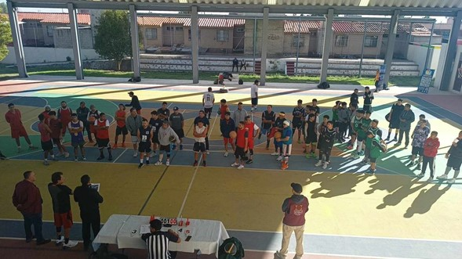

El Ayuntamiento de Jaltenco nos mantendra informados sobre los eventos que se logren organizar durante cualquier festividad o evento del mismo ayuntamiento donde se podrá asistir a los mismos.
¡Te invitamos al informe del 2do Año de Gobierno!
El Gobierno municipal de Jaltenc, que preside la C. Rosario Payne, te invita a participar en el informe del 2do año de gobernación, el cual se llevará acabo este lunes 4 de Diciembre de 2023.
El evento se realizará en dos sedes:
A las 4:00 de la tarde en la Explanada Municipal de Alborada Jaltenco.
En este informe, la alcaldesa Payne dará cuenta de los avances y logros alcanzados por su gobierno en los últimos dos años.
¡Te esperamos!
Se les invita a la comunidad a disfrutar con la familia del "Corredor Gastronómico Textil" que se instalará los días 2, 3 y 4 de diciembre de 2023, en Calle Hidalgo, frente a la Escuela Primaria Prof. Isidro González.
Esto forma parte de la feria con motivo de las fiestas patronales de Jaltenco y tiene como objetivo impulsar la producción local de ropa de mezclilla y consumir los antojitos que de igual manera producen familias jaltenqueses.
Durante los tres días del evento, los asistentes podrán disfrutar de una gran variedad de antojitos típicos de cada día, así como de productos textiles elaborados por manos jaltenquenses.
Además, podrás disfrutar de los juegos mecánicos y otras actividades para toda la familia.
¡Los esperamos!
¡Mujeres de Jaltenco, ya se acerca al curso-taller "Mujeres de Éxito y con Propósito"!
La Alcaldesa Rosario Payne Islas, a través del Instituto Municipal de la Mujer, invita a todas las mujeres de Jaltenco a participar en este curso-taller que se llevará a cabo los días 23 de noviembre en el Salón de usos múltiples de Alborada.
El curso-taller tiene como objetivo brindar herramientas y conocimientos a las mujeres para que puedan alcanzar sus metas y sueños.
El curso es gratuito. ¡No pierdan esta oportunidad de crecer y desarrollar su potencial!
#mujeresdeexitoyconproposito
#gobiernomunicipaldejaltenco
#TransformacionQueUne
#rosariopayne
#resultadospositivos
¡Mujeres mexiquenses, ya pueden solicitar el Programa Integral #MujeresConBienestar!
El programa está dirigido a mujeres de 18 a 64 años, dando prioridad a madres solteras, indígenas, afrodescendientes, repatriadas, con enfermedades crónico-degenerativas, víctimas de algún delito y que vivan en condiciones de alta marginación.
Entre los beneficios que ofrece el programa se encuentran:
▪️ Apoyo económico bimestral de $2,500 pesos.
▪️ Asistencia médica.
▪️ Seguro de vida.
▪️ Asistencia funeraria.
▪️ Descuentos para el bienestar.
▪️ Entre muchos otros.
Para solicitar el programa, las interesadas deben ingresar su solicitud en la página web: http://mujeresconbienestar.gob.mx.
¡No te pierdas esta oportunidad de mejorar tu calidad de vida!
#ElPoderDeServir
El deporte es prioridad, con gran orgullo IMCUFIDET TRANSFORMANDO infancias y juventudes
La IMCUFIDET del municipio de Jaltenco es la que incentiva el deporte en los niños y adolescentes.
Este servicio busca mantener un estado activo en la activación física y cultural de los pequeños miembros del municipio.
La IMCUFIDET al tener a los niños y adolescentes en una actividad física, logrará mantener una salud estable.
Con eso se genera buscar mantener el control con la población infantil que sufre de sopbrepeso y obecidad.
